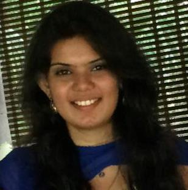

TANVI RAUT
Masters in Computer Science
Welcome to my website. I am a Computer Science graduate student at Rochester Institute of Technology currently in my third semester. I am interested towards working as a Software Developer, Computer Graphics programmer, Web developer. I'm currently looking for Spring 2017 Co-op Opportunities. I love coding in C++ and Java. I am highly motivated student ready to get some work experience in the field of technology. Along with studies, my hobbies are singing , dancing.